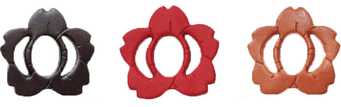
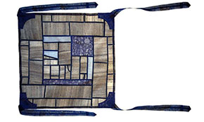

Furoshiki 風 呂 敷
The art of fabric gift wrapping
Publication Date
Reading Time
Category
28 Febuary 2021
xx Minutes
Resources
Japanese have been packing personal belongings and gifts with Furoshiki since ancient times.
Furoshiki are squares of fabric that can be used to wrap just about anything. While regular bags have a fixed amount of space and paper wrappings can only hardly be put around round or oddly shaped objects, a Furoshiki is highly versatile and can be adapted to fit the exact need of the specific object to be wrapped.
A fabric wrap looks beautiful around any shape – a bottle of wine, boxes and even the most oddly shaped items. But best of all – they’re reusable making them a gift to our planet as well.
GIFT WRAPPING CULTURE IN JAPAN
In Japan the tradition of gift wrapping (tsutsumu 包む) is as important as the present itself. Giving someone an unwrapped item is considered extremely impolite. Even a tip given to a maid taking care of a room at a Japanese inn for example is wrapped in a small envelope. Wrapping gifts with Furoshiki implies respect towards the recipient and adds elegance and special meaning to the present.
Since a lot of thought and time was put into selecting the perfect gift for that special someone, it deserves an equally thoughtful presentation.
THE HISTORY OF FUROSHIKI
Baths have been part of the Japanese culture for centuries. People who didn’t have bathrooms in their house used to go to take a bath outside and wrapped everything they needed for the bath in a big, square cloth which they would also spread out on the changing room floor to stand on while undressing and dressing. This is how the name Furoshiki arised. When you break the word Furoshiki into its parts, the first two letters furo (風呂) mean bath and the last one shiki (敷) means to spread out.

The custom of using Furoshiki dates back to the the Nara 奈良時代 period (710 to 794 AD). Baths haven't been widespread back then. They have only been present in buddhist temples and were only used by priests but sick people were occasionally allowed access to the bathhouses. Back then Furoshiki were used to wrap sacred items of priests but weren't called Furushiki just yet. Until they have been known by that name a long time has passed and the name has changed a couple of times. But if narrowly defined, they are dating back more than 1200 years.
In the latter half of the Heian 平安時代 period (794 to 1185 AD), the book of traditional criterion knowledge (Masasukeshouzokushou) was established. In this book the original expression for fabric wrappings Hiratsusumi (平裹 or 平包) which meant flat wrap was appearing. This expression is also being used in the copy of Ban Dainagon Emaki (The Tale of Great Minister Ban) in the latter half of the 12th century. Back then Furoshiki were used for the nobility to wrap and carry clothes and as a means for merchants to carry their goods.
In the Jōhei 承平 period (931 to 938 AD), in the middle of the Heian era, The dictionary Wamyo Ruijusho was published and refers to the Furoshiki as Koromotsutumi (衣包) meaning cloth wrap.
In the Kamakura 鎌倉時代 period (1185 to 1333 AD) wealthy merchants and members of the upper class soon also included baths in their residences but still no one was referring to them as Furoshiki.
In the Muromachi 室町時代 period (1336 to 1573 AD) bathhouses were on the rise. One great steam bath was built by Shogun Ashikaga. The invited lords used silk cloth with their family crests printed in order to keep their clothes separate from others’ while taking a bath and to hold them after finishing their bath. Even at that point in time no one was referring to them as Furoshiki.
The word Furoshiki only came about during the Edo 江戸時代 period (1603 to 1868 AD) when public bathhouses (Sentō 銭湯) became widespread and popular since urban culture flourished because of a stable social infrastructure. The bath – which was expensive entertainment for only a few influential people – came to reach the general public. With the dramatic rise of these baths and thus the use of Furoshiki, the name was changed.
The oldest known use of the word Furoshiki dates back to 1616. In the Sunpuowakemonochou-odouguchou (the relic distribution book of Tokugawa Ieyasu) it has been called “Kokura cotton furoshiki”. But it is said that the name was changed from Hiratsutsumi to Furoshiki only around the 1700’s.
THE RISE OF THE FUROSHIKI
As entering the Meiji 明治 period (1868 to 1912 AD), the feudal system was over and 4 social classes got equality. Everyone could have family names and family crests, and the demand for Furoshiki with crests increased.
Industrial development became a national policy, and due to the industrial revolution and technological innovations manufacturing changed from hand-weaving to machine weaving. The scale of the production system also expanded from wholesale based domestic manufacturing to factory based machine manufacturing, resulting in a drastic increase in productivity.
Furoshiki grew in popularity and developed as an essential item at that time. People were starting to use Furoshiki to wrap almost everything like with today’s bags. Later, it even became popular to use Furoshiki as an elegant wrapping for gifts.
THE FALL OF THE FUROSHIKI
After the Second World War, with advances in production technology, the production volume increased further and as the lifestyle became more and more westernised it became common to use plastic bags.
Supermarkets and department stores offered plastic bags free of charge and opportunities to use Furoshiki in everyday life steadily decreased.
THEIR COMEBACK
Due to the increasing ecological awareness in recent years Furoshiki have had a comeback. In 2006 the Japanese Government started a campaign to promote the Furosiki to reduce waste.
To spread the resurgence in the artform even further the Japanese Minister of the Environment (Yuriko Koike) created a Furoshiki named Mottainai Furoshiki to promote its use even further. With Mottainai meaning that it's a shame for something to go to waste without having made use of its full potential.
We love this idea because this is the exactly why we are building up to this beautiful tradition.
If you want to read the full article, please follow this link.
TRADITIONAL SHAPE
A traditional Furoshiki cloth in ancient times was not perfectly square - the height (take) was slightly larger than the width (haba). This is because the cloth used to be cut from kimonos. They even had a string attached to them.
Nowadays, most Furoshiki are square and strings are not part of the Furoshiki anymore.
TRADITIONAL COLORS & PATTERNS
Traditionally both the color and the printed design on the Furoshiki was meaningful.
As in western countries it's important to choose the correct cloth for the specific occasion in Japan.
FABRICS USED FOR FUROSHIKI
The modern Furoshiki are made from a variety of materials including silk, cotton, and synthetic fiber with designs depending on the use.
Our COVERS are fairly produced from recycled cotton to pay extra attention to the environment. If you want to know exactly why we chose recycled cotton for production read our blog post.
AVAILABLE SIZES
In Japan the most commonly-used squares measure 50cm (19.7’’), 70cm (27.6’’) or 90cm (35.4’’). But there are no set sizes and most of them differ from store to store.
To cover a wide range of possibilities (from gifts starting at engagement ring size to gifts reaching larger sizes like a playstation) our COVERS are currently available in seven sizes.
- EXTREMELY SMALL | 25cm | 9.8’’ — Engagement ring
- EXTRA SMALL | 35cm | 13.8’’ — Necklace
- SMALL | 55cm | 21.7’’ — Book
- MEDIUM | 75cm | 29.5’’ — Jumper
- LARGE | 100cm | 39.4’’ — Shoe Box
- EXTRA LARGE | 125cm | 49.2’’ — Laptop
- EXTREMELY LARGE | 150cm | 59’’ — Playstation
If you want to get some more examples of products fitting with the different sizes please check our size guide.
HOW TO CHOOSE THE RIGHT SIZE
A simple rule of thumb for wrapping a gift with a fabric wrap is to choose a cloth with a diagonal length 3 times the longest length of the object you will be wrapping. Or put into different words - the object you want to be wrapping should approximately be one-third of the Furoshiki's diagonal line.
Keep in mind that Furoshiki embraces a creative and fluid process and that there are no set rules to follow. Usually, a little more room to wrap with is better than not having enough room.
HOW TO WRAP A FUROSHIKI
There are hundreds of ways Furoshiki can be tied. Your wrapping can be tailored to the specific shape of the object being wrapped without destroying the looks and the best thing is that you don’t even need a table, scissors, sticky tape or ribbons to hold it together or make it look beautiful. And this is why wrapping frabrics is not only way more eco-friendlyy but even quicker than paper wrapping.
We have put together several video tutorials on how to wrap with a fabric cloth. From the most easy way to more advanced styles.
You can watch these tutorials in our blog.
Wrapping Japanese Style
It’s been said that Japanese first still their mind then focus on the person the gift is intended for while picking, folding and tying the fabric and even the gift itself. Naturally they may find themselves slipping into a meditative state.
We hope you are enjoying wrapping the Japanese style not only resulting in beautifully wrapped presents but also a relaxed state of mind.
EDGING AND CORNERS
While wrapping, pay attention to the corners because these will be a key feature of your Furoshiki once you fold and tie your creation.
The edges of our COVERS are red to make them look even more special and to distinguish them from other products. Furthermore the corners are rounded to make the folded result look even more beautiful. This way you will always be able to tell them apart from other fabric wraps.
TOMEKOS
Usually the cloths’ are tied with single or double knots. Another Japanese tradition is to tie them with a Tomeko. Tomekos are available in different shapes and designs and are usually made from plywood disks. While threading the ends of the cloth through the openings the cloth will automatically be tied and in addition decorated at the same time.
If you want to give your gift an even more personal touch, you can customize a natural Tomeko with names or decorations. This way you can – for example – tell the gifts apart at Christmas if you use a cloth in the same color.
HOW TO DECORATE A FUROSHIKI
There are hundreds of ways you can fold the Furoshiki and there are even more ways to decorate them. Although they already look perfect without any decoration you can use almost anything to give your gift a personal touch. You can use flowers or leaves, feathers, tomekos or even jewelry.
Your creativity knows no limits.
For more ideas follow us on instagram, pinterest, youtube and facebook or check out our blog.
HOW TO GIVE
In ancient times the giver was presenting the gift to the receiver, unveiled it for them and then kept the cloth for the next use. In more recent times the wrapping has been part of the gift. The presentee can unfold their gifts themselves, keep the cloth and use it for another gift-giving occasion.
Fabric wrapping is thankfully blooming but it still isn’t that common in western countries. We want to help spreading the eco-friendly gift wrapping message. This is why our COVERS have an integrated intelligence. If you give them away they will take you with them on their jorney telling you how many people they have made happy, where they are going, how many trees they have saved and how much trash and CO2 they have reduced. This way you're not only having fun the one time you're giving the present away but every time someone else is doing the same.
If the presentee is new to fabric wrapping it can be helpful to give them a quick demonstration on how simple it is to wrap a gift with a fabric wrap. This ensures your COVER has a high chance of being passed on spreading the eco-friendly fabric wrapping message on its journey.
Let's enjoy giving even more.
WHERE TO BUY FABRIC GIFT WRAPS
If you want to join the reuse revolution with eco-friendly fabric gift wrappings visit our online store. Our premium fabric wraps for every occasion are ethically made from 100% recycled cotton.
Our gift wraps can be used time and time again to delight and enhance the act of giving and are therefore the very best alternative to single-use, throw-away paper wrappings.
DIFFERENT WAYS TO USE A FUROSHIKI
A Furoshiki is super versatile. There are not just many ways to wrap or decorate them but also loads of ways to use them.
Although we think the fabric already has a great value when travelling around the world as a gift wrap making loads of people and our planet happy, we don’t want to deprive you of traditional ways the Furoshiki were used.
This is just a short list to give you some ideas. If you are interested in more ways to use them visit our blog.
- Gift Wrapping
- Picnic hamper or Bento (lunch box)
- Tablecloth
- Reusable shopping bag or decorative handbag
- Scarf, belt or bandana
- Weekender (wrapping clothes when travelling)
- Make-up pouches
- Book cover
- Tissue box cover
- Household decor
- Wall art (with or without frame)
THE OLDEST FUROSHIKI
The oldest still existing Furoshiki is in the safekeeping at the Shōsō-in (正倉院) - the treasure house that belongs to the Tōdai-ji temple in Nara, Japan. It was made around the 8th century but remains in a good preserved state until today. Back in time it was intended to cover special things such as monk’s stole (kesa けさ) and attire for their traditional dance (bugaku 舞楽).
Furoshiki at that time had an attached string in the corner, which Furoshiki today are missing.
Another interesting fact
The Shōsō-in Imperial treasures persist of the letters ka (裹) and kou (幌) both meaning wrap.
EXPRESSIONS AROUND WRAPPING
Before the name Furoshiki was widely spread the tradition of gift wrapping was known as tsutsumu 包む which means to wrap. The word tsutsushimu 慎む which means suppressing one’s feelings can be litterally translated to 'wrap' ones feelings and therefore suggests it’s close relation to the Japanese wrapping culture. In Japan it is considered more important to keep your feelings to yourself than speaking out.
THE ORIGIN OF FABRIC WRAPPING
Many people think fabric wrapping is unique to the Japanese culture, but it has in fact been a tradition in many countries – including Korea – where a (patchwork) wrapping cloth named Bojagi has been used for centuries. We have added a picture of a very old example below.
If you want to know more about the Korean way to wrap presents, you can read our blog post about The Art of Bojagi.